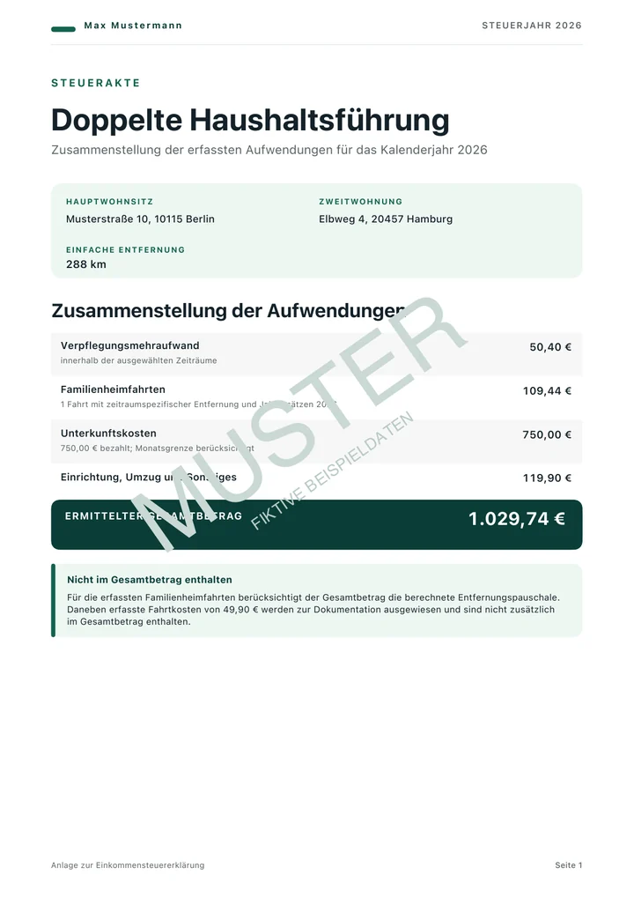

Zweitwohnung
Halte alle Nachweise für eine beruflich bedingte Zweitwohnung in einer lokalen iOS-App zusammen: Kalendertage, Fahrten, Verpflegungsmehraufwand, Unterkunftskosten, Einrichtung, Umzugskosten, Prüfhilfen, PDF-Steuerakte und CSV-Export.
Ein Kalender für alles, was bei der Steuererklärung zählt.
Tippe auf ein Datum und halte fest, was passiert ist: Anreise, ganzer Tag, Abreise, Heimfahrt, Rückfahrt zur Zweitwohnung, gestellte Mahlzeiten, Ticketkosten und Notizen.
Kalendereinträge
Jeder Tag kann Verpflegung, Fahrtrichtung, optionale Ticketkosten, gestellte Mahlzeiten und eine Notiz enthalten.
Ausgabenkategorien
Erfasse Unterkunft, Einrichtung, Umzugskosten, Fahrtbelege und weitere beruflich bedingte Ausgaben in einer eigenen Übersicht.
Adressen und Entfernung
Speichere Hauptwohnsitz und Zweitwohnung und ermittle anschließend mit Apple MapKit die einfache Entfernung.
Aus verstreuten Aufzeichnungen wird eine jederzeit prüfbare Jahresakte.
Die Ergebnisansicht führt Verpflegungsmehraufwand, Familienheimfahrten, Unterkunftsgrenzen, erfasste Kosten und Plausibilitätsprüfungen zusammen, damit du das Steuerjahr jederzeit überblickst.
Grundlagen festlegen
Verpflegungspauschalen, zeitraumspezifische Entfernungen, Kilometersätze des Steuerjahres und die Unterkunftsgrenze bleiben nachvollziehbar.
Fehlendes prüfen
Die App weist auf eine fehlende Entfernung, einen ungeprüften Dreimonatszeitraum und zusätzliche Heimfahrten in derselben Kalenderwoche hin.
Steuerjahr übergeben
Erstelle eine PDF-Steuerakte für die Steuererklärung oder übergib die Kalender- und Ausgabendaten als CSV an Numbers, Excel oder einen anderen Arbeitsablauf.
Die angezeigten Beträge sind geschätzte abzugsfähige Aufwendungen auf Grundlage deiner Eingaben und der hinterlegten Regeln. Sie stellen keine Steuererstattung dar, ersetzen keine Steuerberatung und garantieren keine Anerkennung durch das Finanzamt.
So sieht die fertige Steuerakte aus.
Die Vorschau zeigt die erste Seite eines fiktiven Exports. Eine vollständige Steuerakte kann diese Unterlagen für Prüfung und Übergabe zusammenführen:
- Jahres- und Monatsübersicht
- Kalender- und Fahrtaufzeichnungen
- Ausgaben und angehängte Nachweise
- Nicht berücksichtigte Einträge transparent ausgewiesen
- Optionale Berechnungsgrundlagen
Inhalt und Seitenzahl richten sich nach deinen Aufzeichnungen und den gewählten Exportoptionen.

Kein Konto und keine Steuerdatenbank bei Mathricks.
Auf dem Gerät gespeichert
Deine Aufzeichnungen und ausgewählten Belegkopien werden im App-Container auf deinem iPhone gespeichert. Eine optionale Sicherung in deiner eigenen iCloud hilft bei einem Geräteverlust. Sie bleibt ausgeschaltet, bis du sie aktivierst, und kann jederzeit wieder gelöscht werden. Abhängig von deinen Einstellungen können die Daten außerdem in einem Apple-Geräte- oder iCloud-Backup enthalten sein.
Begleiter für die Steuererklärung
Zweitwohnung schätzt potenziell abzugsfähige Aufwendungen. Die App berechnet keine Erstattung, ersetzt weder Steuerberatung noch amtliche Formulare und prüft nicht sämtliche rechtlichen Voraussetzungen deines Einzelfalls.
Fragen zu Einrichtung, Erfassung, Export oder Datenschutz?
Zweitwohnung gibt es im App Store. Auf den Hilfe- und Datenschutzseiten findest du Kontaktmöglichkeiten und Informationen zur Datenverarbeitung.